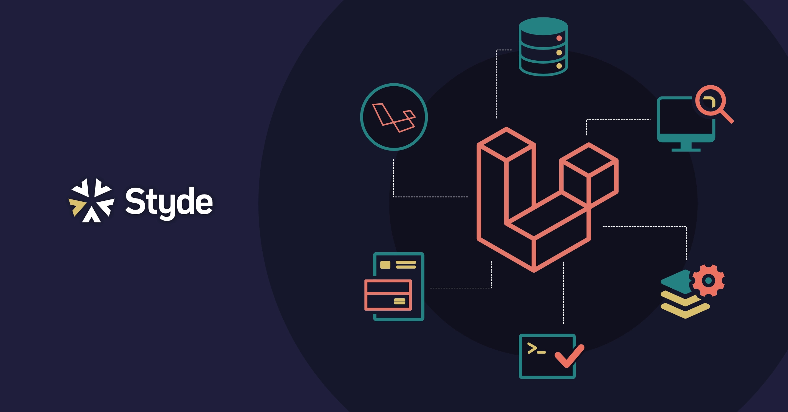

Ecosistema de Laravel
Ecosistema de Laravel¶
Una de las claves del éxito de Laravel es que se ha convertido en una industria de generación de servicios relacionados con el framework. Esto ha permitido que las personas cercanas a su núcleo, Taylor Otwell a la cabeza, tengan una base sólida para financiar el desarrollo de Laravel, agregar funcionalidad y seguir innovando con la creación de nuevas herramientas que hagan la vida más sencilla a los desarrolladores.
Algunos de los servicios y herramientas para el framework Laravel más populares y útiles son los siguientes:
Forge: es un sistema de administración de servidores, como una especie de panel con el que puedes crear dominios, instalar Laravel, desplegar aplicaciones, etc. Pone a los desarrolladores toda una serie de herramientas para que instalar aplicaciones Laravel en producción sea muy sencillo.
Vapor: permite desplegar aplicaciones Laravel sin necesidad de tener un servidor. Es decir, es un bakend “serverless”. Al no tener servidor te ahorras la necesidad de administrar tu propio sistema, lo que teóricamente quita trabajo y aumenta la seguridad.
Nova: es un sistema de gestión de contenido que permite crear los típicos paneles de administración de una manera muy cómoda. Es muy versátil y ahorra cientos de horas de programación que muchas veces son tediosas y repetitivas.
Envoyer: Permite integración continua de las aplicaciones Laravel, simplemente haciendo un push al repositorio la aplicación se despliega en su nueva versión, sin interrumpir el servicio.
Spark: Permite crear aplicaciones con una base de código encima del propio Laravel, evitando muchas partes que se pueden repetir en muchos de los proyectos. Los anteriores son proyectos que, de alguna u otra manera, tienen cierta parte de pago y que sirven como decíamos para financiar la maquinaria en torno de Laravel. Pero además hay muchos otros servicios que forman parte del ecosistema de Laravel que son gratuitos o están incluidos entre las funcionalidades del framework:
Homestead: Permite máquinas virtuales para facilitar el desarrollo de Laravel en las condiciones más profesionales.
Valet: Permite en Mac crear entornos de ejecución de Laravel para desarrollo muy ligeros y fáciles de configurar mediante comandos de consola.
Cashier: Para pagos electrónicos y suscripciones
Scout: un sistema de búsqueda por texto
Passport: Un sistema de autenticación OAuth2
Mix: una envoltura de Webpack para compilar assets y realizar tareas del front, sin las complejidades de administrar un entorno directamente con Webpack.
Echo: que permite trabajar con datos en tiempo real
Horizon: para la monitorización de colas de procesos
Entre las ventajas de Laravel quizás la que más destaco es que es muy fácil de usar y aprender como framework de PHP, la famosa curva de aprendizaje, y sí eso lo sumamos a que todas las demás como las características del anterior punto y que en el mercado es bastante usado y no está para nada mal pagado si tienes algo de experiencia, hace que en realidad esté framework sean casi todas ventajas más que desventajas si te tienes que decantar por aprender alguno o quieres usar alguno para algún proyecto.
También otra gran ventaja es su documentación, ya estamos acostumbrados a cualquier framework encontrarnos con una documentación extensa, y Laravel no iba a ser menos, cuenta con muchos ejemplos de uso junto con los paquetes que tienes que usar en los controladores para usar esa clase y sabiendo que te va a devolver esas llamadas, si un string, un array, un booleano, etc…
Y quizás la mayor desventaja que puede tener es que para algunas librerías y demás depende de Symfony que es otro framework del mismo estilo, dicen que con la curva de aprendizaje no tan liviana, aunque yo en particular he usado los dos y los he aprendido desde cero y si sabes cómo funciona un MVC, sabes cómo funcionan todos, lo único que tienes que hacer es mirar la documentación para saber cómo llama cada uno a sus métodos en particular y entre estos dos saber usar Blade o Twig, diferentes pero similares motores de plantillas que utilizan uno u otro framework. 